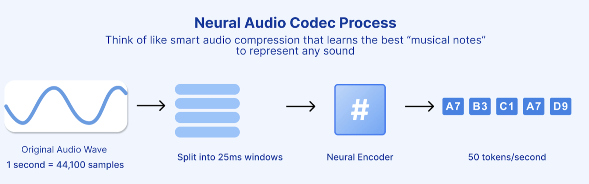
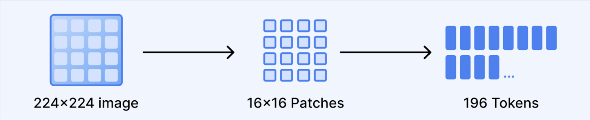

MTok = 1 million (1,000,000) tokens, the standard unit.


| Provider | Write | Read | Lifetime |
|---|---|---|---|
| Anthropic (explicit & automatic) | 1.25× / 2× | 0.1× (90% off) | ~5 min / 1 hr |
| Google Gemini | per hr storage fee | 0.1x (90% off) | 1 min - 24 hr |
| OpenAI (automatic) | 1.25x now | ~0.5× (up to 90% off) | ~5–10 min |
| Cost Savings | |
|---|---|
| Baseline | ~$16,350 / month |
| + prompt caching | → ~$7,200 |
| + batch async share | → ~$6,100 |
| + distilled mini model | → ~$3,000–3,500 |
| + trim / cap / summarise | → ~$2,700–3,100 |